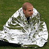

Send a distress signal using Morse code
|
|
|
This will produce a continuous beeping sound and a flashing light sending an SOS message
-
Morse Code
- A, a (● –)
- B, b (– ● ● ●)
- C, c (– ● – ●)
- D, d (– ● ●)
- E, e (●)
- F, f (● ● – ●)
- G, g (– – ●)
- H, h (● ● ● ●)
- I, i (● ●)
- J, j (● – – –)
- K, k (– ● –)
- L, l (● – ● ●)
- M, m (– –)
- N, n (– ●)
- O, o (– – –)
- P, p (● – – ●)
- Q, q (– – ● –)
- R, r (● – ●)
- S, s (● ● ●)
- T, t (–)
- U, u (● ● –)
- V, v (● ● ● –)
- W, w (● – –)
- X, x (– ● ● –)
- Y, y (– ● – –)
- Z, z (– – ● ●)
- 0 (– – – – –)
- 1 (● – – – –)
- 2 (● ● – – –)
- 3 (● ● ● – –)
- 4 (● ● ● ● –)
- 5 (● ● ● ● ●)
- 6 (– ● ● ● ●)
- 7 (– – ● ● ●)
- 8 (– – – ● ●)
- 9 (– – – – ●)
- Help
- Help me
- Im trapped
- Rescue me
- I need food
- Im here
- Please
- Assist me
-
Survival Guidelines
-
1. Protect yourself
If you are indoors, stay there. Quickly move to a safe location in the room such as under a strong desk, a strong table, or along an interior wall. The goal is to protect yourself from falling objects and be located near the structural strong points of the room. Avoid taking cover near windows, large mirrors, hanging objects, heavy furniture, heavy appliances or fireplaces
-
2. Move to an open area
If you are outdoors, move to an open area where falling objects are unlikely to strike you. Move away from buildings, powerlines and trees.
-
3. Stop and observe
If you're in a car, stop the car and stay inside the car until the earthquake stops.
-
4. Use the straircase
Don't use elevators (they'll probably get stuck anyway).
-
1. Check for injuries
Check for injuries, attend to injuries if needed, help ensure the safety of people around you.
-
2. Inspect damages
Check for damage. If your building is badly damaged you should leave it until it has been inspected by a safety professional.
-
3. Check gas leaks
If you smell or hear a gas leak, get everyone outside and open windows and doors. If you can do it safely, turn off the gas at the meter. Report the leak to the gas company and fire department. Do not use any electrical appliances because a tiny spark could ignite the gas.
-
4. Unplug appliances
If the power is out, unplug major appliances to prevent possible damage when the power is turned back on. If you see sparks, frayed wires, or smell hot insulation turn off electricity at the main fuse box or breaker. If you will have to step in water to turn off the electricity you should call a professional to turn it off for you.
-
5. Move away
Stay away from beaches. Tsunamis and seiches sometimes hit after the ground has stopped shaking.
-
FAQs
What is an earthquake?
A trembling or shaking of the ground caused by the sudden release of energy stored in the rocks below the surface, radiating from a fault along which movement has just taken place.
How long do earthquakes last?
Generally, only seconds. Strong ground shaking during a moderate to large earthquake typically lasts about 10 to 30 seconds. Readjustments in the earth cause more earthquakes (aftershocks) that can occur intermittently for weeks or months.
Is there an 'earthquake season' or 'earthquake weather'?
No. Earthquakes can occur at any time of the year and at any time of the day or night. Earthquakes occur under all weather conditions, sunny, wet, hot, or cold--without special tendency.
Where is the safest place to be in an earthquake?
In an open field, where nothing can fall on you. Earthquakes do not injure or kill people; buildings and falling objects do. If you are indoors, when you feel the ground start to shake, take cover immediately under a table or sturdy piece of furniture, placing a barrier between falling objects and yourself. Do not attempt to use the stairs or an elevator or run out of the building.
Will the ground open up during an earthquake?
The ground does not open up and swallow people (a commonly feared myth). Open ground cracks may form during an earthquake--related, for example, to landsliding or ground slumping. But such fissures are open gaps (they don't "swallow") that a person could stand in.
What is a seismometer, seismograph, and a seismogram?
A seismometer is a sensor placed in the ground to detect vibrations of the earth. A seismograph is an instrument that records these vibrations. A seismogram is the recording (usually paper or film) of the earth's vibrations made by a seismograph.
When was the seismograph invented?
In 1880. The earliest seismographs in the U.S. were installed in 1887, in California. (In 132 A.D. a Chinese scholar, Chang Heng, made a mechanical device to detect the first main impulse of ground shaking.)
What is the Richter Scale?
A scale for determining the size of an earthquake from the recording of earthquake waves made on a seismograph. The maximum height of the visible recording is adjusted for the distance from the instrument to the earthquake. This is not a physical scale (in other words, one cannot look at or hold the "Richter Scale"). Each 1-unit increase in the Richter Scale roughly corresponds to a 30-fold increase in energy release and a 10-fold increase in ground motion at any site.
Do many small earthquakes prevent larger earthquakes?
No. Observed numbers of small earthquakes are too few to equal the amount of energy released in one large earthquake. (It would take roughly 24 million earthquakes of magnitude 2 to release the same energy as one earthquake of magnitude 7.)
Can we predict earthquakes?
No. We cannot predict the precise time, location, and size of earthquakes. In order to predict earthquakes there has to be an adequate history of repeated earthquake cycles and/or extraordinary instrumental observations. Long-term forecasts (on scales of years or decades) are becoming common for well-studied earthquake zones. The Chinese have correctly predicted some earthquakes, evacuated cities and saved lives. They have also had large earthquakes occur with no predictions and have predicted earthquakes that never occurred.
What is liquefaction?
Water-saturated sands, silts, and other very loosely compacted soils, when subjected to earthquake motion, may be rearranged, thereby losing their supporting strength. When this occurs, buildings may partly sink into the ground and sand and silts may come to the surface to form sand flows. In effect, the soils behave as dense fluids when liquefied.
Do we need to worry only about large earthquakes causing damage?
No. A moderate-sized earthquake that occurs under an urbanized area can cause major damage.
Are magnitude and intensity of an earthquake the same?
They are not. Magnitude is a measure of the energy that is released during an earthquake, while intensity is a description of the variable shaking that is experienced in different areas. Intensity is usually written in Roman numerals (for better distinction from magnitude, which is usually in Arabic numbers). The magnitude of an earthquake is a single number. For instance, a magnitude 7.2 is expected from the West Valley Fault that transects from Sierra Madre through Metro Manila to Batangas. The magnitude scale is logarithmic: between magnitudes 7.2 and 7.3, the increment of energy is about 1.4 times; between magnitudes 7.0 and 8.0, about 32 times! The wattage of a light bulb is analogous to the magnitude of an earthquake. The intensity of light or intensity of an earthquake varies according to several factors, including distance from the bulb or distance from the epicenter. Other factors that affect earthquake intensity are rock or soil types, ground sublayer, and depth, length and type of fault displacement. What intensities can a magnitude 7.2 earthquake from the West Valley Fault generate in Metro Manila? According to the 2004 Metro Manila Earthquake Impact Reduction Study by the Philippine Institute of Volcanology and Seismology (Phivolcs), the Metropolitan Manila Development Authority and Japan International Cooperation Agency, intensities VIII (very destructive) to IX (devastating) may be experienced alongside Marikina River and near Manila Bay. Lower intensity may be experienced in most of Quezon City. In the sense that large-magnitude and high-intensity earthquakes are probable, we may say that Metro Manila has high seismic hazard, as do other regions in the country. .
How rampant is the construction of buildings beside or on earthquake faults like the West Valley Fault?
Construction is very rampant beside or on earthquake faults, including the West Valley Fault that transects Metro Manila. Why? And how risky is this situation? It was in 2001 that the National Structural Code of the Philippines published the maps by Phivolcs that indicated the active faults in the country. As a result, buildings that were designed and constructed earlier did not take into account the faults. Neither did nonengineered houses, even new ones, consider the faults. Phivolcs now recommends avoiding construction within 5 meters on each side of a fault trace, or a total width of 10 meters. We may call this the ideal ?10-meter wide no-build zone? in the vicinity of a fault. Ideally, we should not build in the 10-meter wide no-build zone to avoid the hazard of ground fissure. It will be extremely difficult for the foundation of a structure to withstand ground fissures or deformations. In case a bridge or a pipeline cannot avoid crossing a fault trace, a special design will be needed to accommodate dislocations of at least one meter. We may also speak of a 10-kilometer wide near-fault zone that requires, since 2001, the highest seismic design forces to withstand ground shaking (in contrast with the hazard of ground fissure in the 10-meter wide no-build zone.) At present, the exposure of houses and buildings is very high within the 10-meter wide no-build zone and the 10-km wide near-fault zone.
Is it true that liquefaction or ?quicksand effect? is a threat to structures located far from the 10-km near-fault zone?
Yes, the ground may liquefy or turn into quicksand even in areas beyond the 10-km wide near-fault zone. If the soil is sandy as in river deltas and coastal areas, the water table is just a few meters below the ground surface. If the ground-shaking intensity is high and sustained for 30 seconds or more, then the soil may liquefy. With liquefaction, whole houses and buildings may tilt and even topple. Tilting or toppling of structures during liquefaction tends to be slow, giving occupants enough time to evacuate. A permanent tilt or serious sinking may render a structure unusable. Deep foundations such as concrete piles, 30 meters deep or deeper, are recommended for large buildings in areas with high liquefaction potential to avoid tilting or sinking. There are also ground improvement techniques, meant to solidify the soil beneath and around the foundation, that may be recommended for low-rise structures.
What percent of buildings comply with government standards?
More than 35 percent of low-rise residential buildings in Metro Manila and perhaps in other regions may not be complying with current government standards for construction either because these are nonengineered structures or because these were built according to much older standards that are now inadequate. Building construction standards are periodically updated, incorporating lessons learned from recent earthquakes in the country and overseas. Our national structural code was upgraded significantly in 2001 and recently in 2010. More than 25 percent of mid-rise buildings may be noncompliant to current standards, mostly due to their use of the older construction code(s) and standards. More than 10 percent of very high-rise buildings (above 30 stories), which are relatively new, may be noncompliant. Anecdotal reports indicate that some engineers are inclined or persuaded to ?optimize? or ?minimize? their structural design to reduce the initial construction cost. The cost of the structure of high-rise buildings may be about half of the building cost, the remainder being architectural, electromechanical and other factors. Some engineers literally aim for minimum compliance with the standard and code, rather than provide judicious allowance for ?surprises of nature.? In contrast, it is notable that many old buildings were designed and built above the minimum standards that were applicable during their construction. Such buildings, even if old, may be audited and possibly proven adequate even by current standards and code.
What maximum intensity is considered by the current building code?
It is better to ask engineers about the maximum acceleration (movement in meters per second per second) considered by the current code. Intensity scale, by definition, is really descriptive rather than truly quantitative. In the Phivolcs earthquake intensity scale from I (1) to X (10), Intensity VIII can be described as ?very destructive.? In Intensity VIII, many well-built buildings are considerably damaged. Concrete dikes and foundation of bridges are destroyed by ground settling or toppling. In terms of equivalent acceleration, it may be approximated that 40 percent of the magnitude of acceleration due to gravity (0.4 x G [9.81 meters per second per second]) is considered in seismic zone 4, the zonal classification of most of the country. As much as double, or about 0.8G, is considered by the building code for near-fault zones. We must note, however, that higher accelerations may still be produced by the maximum credible earthquakes from inland faults such as the West Valley Fault or the Philippine Fault System. The building code, in other words, does not even require a design for the maximum conceivable acceleration, but only for the maximum that is likely to occur within the life span of the building. The life span of a building is assumed to be 50 years in a typical design.
Which building will experience higher intensity, a low-rise or a high-rise?
Tall buildings will be shaken more by large earthquakes that have their epicenters far away, say 50 km. Such earthquakes, which may center in offshore trenches or in a very long inland fault, tend to propagate long-period (low-frequency) vibratory waves that ?tune? to the natural vibration periods of tall buildings. Low buildings will be shaken more by large or moderate earthquakes from nearby faults, such as the West Valley Fault. Near-fault earthquakes tend to propagate short-period (high-frequency) vibratory waves that ?tune? to short buildings. Hence, every building, whether low-rise or high-rise, needs to be designed to withstand earthquake shaking. The earthquake hazards in the country may come from nearby inland faults and offshore trenches.
Can structures that comply with the national building code escape damage from an earthquake?
No, damage is not precluded by compliance with the minimum requirements of the national building code. The minimum standards are aimed at preventing sudden or brittle-type collapse of structures, the kind that will harm or kill some or all occupants. A building that follows the minimum standards may still be significantly damaged in the next major earthquake to the point that it will require considerable repairs before it can be reused. Unlike in the United States or Japan, we do not provide in the building code the choice of next higher level(s) of design criteria, the kind that will ensure uninterrupted use of the building. Some owners of major buildings choose to require their engineers to design for higher performance standards. BPO companies and global semiconductor and electronics plants are among the examples. Tougher or more massive structural design is not necessary even in the next higher standard. Over the past 10 years, base-isolation technologies for low-rise buildings in which this writer became involved in the seismic design have been introduced in the country. Dampers or damping devices against vibrations have also been introduced in a few very tall buildings. In a few major projects, worst-case scenario earthquakes have been considered in the analysis and design, over and above the standard requirement of the code.
What is the safest spot in a building during a strong earthquake?
As explained earlier, significant damage may still happen in a well-designed building. During an earthquake, it is generally advisable to stay beside or under sturdy columns, door frames or desks to guard against falling debris. Hollow-block walls with little or no steel reinforcement, pieces of furniture, and fixtures on walls and ceilings tend to be hazardous during strong shaking. In the extreme event that beams or whole floors are slowly collapsing, vertically supporting elements (the column, door frame or table) may cushion the impact of falling objects or debris. It is not advisable to move to higher floor(s). When the strong shaking is over, it is generally advisable to move out of the building, away from falling debris.
Why are building owners not retrofitting or upgrading their structures?
Upgrading or retrofitting of houses or buildings to meet current building standards involves significant costs. Indirect costs due to disruption of occupancy during upgrading or retrofitting are also a significant deterrent. It is less expensive to design and build with some extra provisions over and above the minimum code requirements than to upgrade or retrofit within 10 years or so. In the United States and Japan, the government provides financial and other regulatory incentives to motivate building owners to retrofit. The two countries retrofitted most government buildings first, in the process making the retrofitting technologies more familiar to the public and the corresponding costs less prohibitive.
Who is responsible for the structural integrity of a building?
The owner of the house or building is responsible for the structural integrity, including the physical protection of occupants and users. Within 15 years of construction, under the Civil Code of the Philippines, engineers (or architects) and contractors (builders) are held liable for any structural failure due to defects in design or construction. For buildings and houses that are older than 15 years, the owners are wholly responsible and liable.
-
First Aid Kit
It is recommended that all first aid kits for a family of four include the following:
-
Absorbent compress dressings
2 pieces, (5 x 9 inches)
-
Adhesive bandages
25 pieces, (assorted sizes)
-
Adhesive cloth tape
1 piece, (10 yards x 1 inch)
-
Antibiotic ointment packets
5 pieces, (approximately 1 gram)
-
Antiseptic wipe packets
5 pieces
-
Packets of aspirin
2 pieces, (81 mg each)
-

Blanket
1 piece, (space blanket)
-
Breathing barrier
1 piece, (with one-way valve)
-
Instant cold compress
1 piece
-
Pair of nonlatex gloves
2 pieces, (size: large)
-
Hydrocortisone ointment packets
2 pieces, (approximately 1 gram each)
-
Scissors
1 piece, (stainless steel)
-
Roller bandage
1 piece each, (3 and 4 inches wide)
-
Sterile gauze pads
5 pieces each, (3x3 and 4x4 inches)
-
Oral thermometer
(non-mercury/nonglass)
-
Triangular bandages
2 pieces
-
Tweezers
small size
-
First aid instruction booklet
Available at your local hospital or supermarket
A well-stocked first aid kit is a handy thing to have. To be prepared for emergencies:
● Keep a first aid kit in your home and in your car.
● Carry a first aid kit with you or know where you can find one.
● Find out the location of first aid kits where you work.
Whether you buy a first aid kit or put one together, make sure it has all the items you may need:
● Include any personal items such as medications and emergency phone numbers or other items your health-care provider may suggest.
● Check the kit regularly.
● Make sure the flashlight batteries work.
● Check expiration dates and replace any used or out-of-date contents.
-
About
What is yanigPH?
yanigPH is an iOS app that allows the user to send a distress signal via sound and light using Morse code. Just one tap to the "SOS" button will transmit a continuous beeping sound and light with the three common letters used to call for help, the letters s, o, and another s. The app also contains various information regarding earthquakes.
Who made yanigPH?
It is an initiative by Protechtion Corporation to further mitigate the awareness of the public concerning earthquakes.
What are the features of the app?
Besides from the features mentioned above, the app also includes local emergency hotlines, frequently asked questions about earthquakes, and list of equivalent morse code of letters, numbers, and punctuation.
-
Emergency Hotlines
-
National Disaster and Risk Reduction and Management Council (NDRRMC)
(02) 911-1406, (02) 912-2665, (02) 912-5668, (02) 911-1873
-
Philippine National Police (PNP) Hotline Patrol
117 or send TXT PNP to 2920
-
Bureau of Fire Protection (NCR)
117, (02) 729-5166, (02) 410-6319 (Regional Director, Information Desk)
-
Department of Transportation and Communications (DOTC) hotline
hotline7890 or (02) 726-6255
-
Metro Manila Development Authority (MMDA)
136, 882-0925 (flood control) Trunkline: (02) 882-4150-77 loc. 337 (rescue), 255 (Metrobase) Metrobase: 882-0860
-
Department of Public Works and Highways (DPWH)
(02) 304-3713, (02) 304-3904
-
Red Cross hotline
143, (02) 527-0000, (02) 527-8385 to 95
-
North Luzon Expressway (NLEX) hotlines
(02) 776-7777, 0917-539-8762 (globe), 0999-888-0893 (smart), 0932-854-6980 (sun)
-
Subic-Clark-Tarlac Expressway (SCTEX) hotlines
(0920) 96-SCTEX (72839) (traffic hotline) or (045) 459-0522
-
Skyway System Hotline
(02) 776-7777, 0917-539-8762 (globe), 0999-888-0893 (smart), 0932-854-6980 (sun
-
South Luzon Expressway (SLEx) hotline
0917-6877539 (globe), (049) 508-7509, (02) 584-4389
-
Philippine Atmospheric, Geophysical and Astronomical Services Administration(PAGASA) hotline
(02) 433-8526
-
Philippine Coast Guard
(02) 527-3877, (02) 527-8481, 0917-724-3682 (globe), 0917-PCG-DOTC (globe)
-
Manila Water Hotline
1627
-
 PHIVOLCS
PHIVOLCSTrunkline: (02) 426-1468 to 79, local 124/125 (emergency); Text/call: 0905-313-4077 (globe)
-
DSWD
(632)931-81-01 to 07, local 426 (Disaster Response Unit); (02) 951-7119
-
Manila Traffic Hotline
527-3087
-
Cainta Traffic Hotline
646-0044, (02) 248-1743 (hotline)
-
Las Pias Traffic
534-2993 (traffic); 533-2225 (Command Control Center)
-
Mandaluyong Hotline
534-2993 (traffic); 533-2225 (Command Control Center)
-
Taguig Traffic
838-4301 loc. 7112
-
Pasig Traffic
643-0000 (Command Control Center); 643-1111
-
Makati Public Safety Dept
844-3146, 819- 3270 to 71